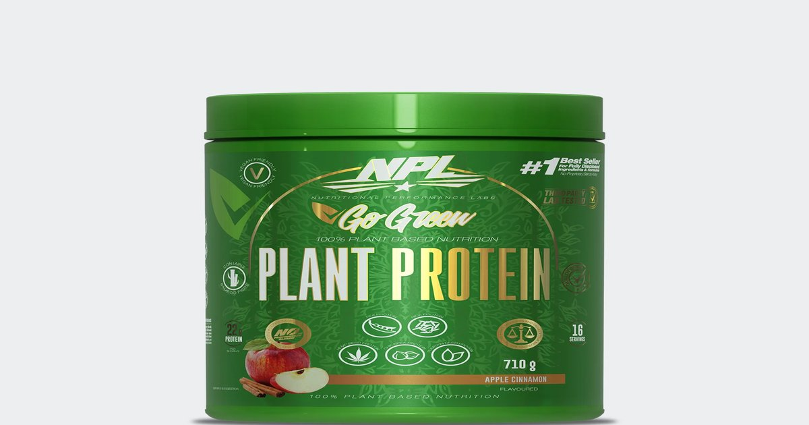

Four weeks out from his first natural bodybuilding show, my client Miguel was panicking. He was vegan. Plant-based for seven years, ethical reasons, not health. He'd been crushing his training. His conditioning was on point. But his protein intake was falling off a cliff. He was eating around 80 grams a day. At his weight, 160 pounds, that's 0.5 grams per pound. Half of what he needed. The Protein Intake Calculator showed him the gap in plain numbers.Protein Intake Calculator
Enter your weight, activity level, and goal — get your daily protein target in grams per pound and grams per kilogram.
All data stays in your browser — we never see it.
Vegan Protein Adequacy Calculator
Enter your plant-based meals — see if you're getting enough lysine, methionine, and total protein for muscle growth.
All data stays in your browser — we never see it.
Macro Split Planner
Enter your calorie target and protein percentage — get a daily macro split with meal-by-meal recommendations.
All data stays in your browser — we never see it.
Protein Source Comparator
Compare cost per gram, leucine content, PDCAAS score, and digestibility across protein sources.
All data stays in your browser — we never see it.